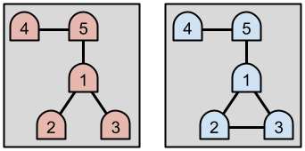

You are investigating a cave. The cave has $$$\mathbf{N}$$$ rooms. There are underground passages that bidirectionally connect some pairs of rooms. Each room has at least one passage connected to it. No passage goes from a room to itself, and no two rooms are connected by more than one passage.
When in a room, you can identify what room you are in and see how many passages it connects to, but you cannot distinguish the passages. You want to estimate the number of passages that exist in the cave. You are allowed to do up to $$$\mathbf{K}$$$ operations. An operation is either:
When you decide to walk through a passage, you are unable to choose which one, because they are all alike. A passage is chosen for you uniformly at random.
You begin the investigation in an arbitrary room. Estimate the number of passages between rooms in the cave with at most $$$\mathbf{K}$$$ operations.
If $$$E$$$ is your estimate and $$$P$$$ is the actual number of passages, your solution is considered correct for a test case if and only if $$$P \cdot 2/3 \le E \le P \cdot 4/3$$$.
To pass a test set, your solution must be correct for at least 90% of the test cases in that set.
This is an interactive problem. You should make sure you have read the information in the Interactive Problems section of our FAQ.
Initially, your program should read a single line containing an integer, $$$\mathbf{T}$$$, the number of test cases. Then, $$$\mathbf{T}$$$ test cases must be processed.
For each test case, your program must first read a line containing two integers $$$\mathbf{N}$$$ and $$$\mathbf{K}$$$: the number of rooms in the cave, and the maximum number of room operations you are allowed. Rooms are numbered between $$$1$$$ and $$$\mathbf{N}$$$. The cave is determined at the beginning of the test case – it won't be changed while you explore it. Then, your program must process up to $$$\mathbf{K} + 1$$$ exchanges.
The $$$i$$$-th exchange starts with you reading a line containing two integers $$$\mathbf{R_i}$$$ and $$$\mathbf{P_i}$$$, representing the number of the room you are currently in and the number of passages it connects to. Then, you must output a single line containing one of the following:
W: this means you want to walk through a random passage.T and an integer $$$S$$$: this means you want to teleport to room
$$$S$$$.E and an integer $$$E$$$: this means you want to finish
exploring and estimate that the cave contains $$$E$$$ passages.After an estimation operation, the judge will immediately start the next test case if there is one, regardless of the correctness of your estimation. If there is no next test case, the judge will wait for you to finish without any further output.
If the judge receives an invalidly formatted line from your program at any moment, or if your $$$(\mathbf{K}+1)$$$-th exchange for a test case is not an estimation operation, the judge will print a single number $$$-1$$$ and will not print any further output. If your program continues to wait for the judge after receiving a $$$-1$$$, your program will time out, resulting in a Time Limit Exceeded error. Notice that it is your responsibility to have your program exit in time to receive a Wrong Answer judgment instead of a Time Limit Exceeded error. As usual, if the memory limit is exceeded, or your program gets a runtime error, you will receive the appropriate judgment.
Time limit: 120 seconds.
Memory limit: 1 GB.
$$$1 \le \mathbf{T} \le 100$$$.
$$$2 \le \mathbf{N} \le 10^5$$$.
$$$K = 8000$$$.
Each room has at least one passage connected to it.
You can use this testing tool to test locally or on our platform. To test locally, you will need to run the tool in parallel with your code; you can use our interactive runner for that. For more information, read the instructions in comments in that file, and also check out the Interactive Problems section of the FAQ.
Instructions for the testing tool are included in comments within the tool. We encourage you to add your own test cases. Please be advised that although the testing tool is intended to simulate the judging system, it is NOT the real judging system and might behave differently. If your code passes the testing tool but fails the real judge, please check the Coding section of the FAQ to make sure that you are using the same compiler as us.
1
5 3
4 1
T 5
5 2
W
4 1
T 1
1 3
E 5
